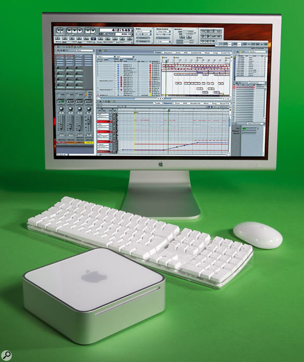

minimac2005
The 2005 Mac mini was a compact desktop computer introduced by Apple, featuring a sleek design and efficient performance. It came equipped with a PowerPC G4 processor, options for up to 2GB of RAM, and integrated graphics. The Mac mini was notable for its affordability, making it accessible for users transitioning to the Mac ecosystem. It offered multiple connectivity options, including USB and FireWire ports, and was compatible with a wide range of peripherals. This model emphasized versatility, allowing users to customize their setups with their own monitors and keyboards.